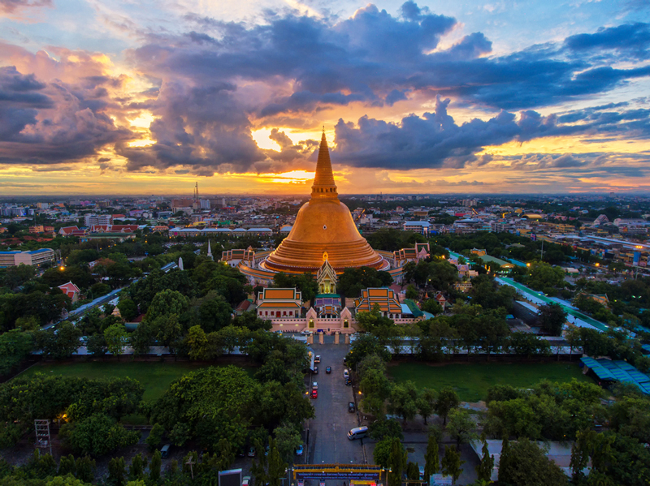

ประวัติ

🏛️ ยุคโบราณ
นครปฐมเคยเป็นศูนย์กลางอารยธรรมสำคัญในสมัย ทวารวดี (ประมาณพุทธศตวรรษที่ 11-16) เชื่อกันว่าเป็นหนึ่งในพื้นที่แรก ๆ ที่ พระพุทธศาสนา เข้ามาสู่ดินแดนสุวรรณภูมิ
หลักฐานสำคัญคือ พระปฐมเจดีย์ ซึ่งเดิมเป็นสถูปแบบอินเดีย แสดงถึงความรุ่งเรืองของพุทธศาสนาในยุคนั้น
⚔️ ยุคเสื่อมและร้าง
หลังจากอำนาจทวารวดีเสื่อมลง พื้นที่นครปฐมได้รับอิทธิพลจากขอม และต่อมาประสบปัญหาแม่น้ำเปลี่ยนทาง ทำให้เมืองค่อย ๆ เสื่อมความสำคัญและกลายเป็นเมืองร้างในช่วงหนึ่ง
👑 สมัยกรุงรัตนโกสินทร์
ในรัชสมัย พระบาทสมเด็จพระจอมเกล้าเจ้าอยู่หัว (รัชกาลที่ 4) ได้มีการบูรณะพระปฐมเจดีย์ครั้งใหญ่ และฟื้นฟูเมืองนครปฐมขึ้นมาใหม่
ต่อมาในสมัย รัชกาลที่ 6 นครปฐมได้รับการยกฐานะเป็นจังหวัดอย่างเป็นทางการ
🌾 นครปฐมในปัจจุบัน
ปัจจุบันนครปฐมเป็นจังหวัดสำคัญในภาคกลาง
เป็นศูนย์กลางการศึกษา (เช่น มหาวิทยาลัยศิลปากร วิทยาเขตสนามจันทร์)
มีชื่อเสียงด้านเกษตรกรรม โดยเฉพาะ ส้มโอ ข้าว และฟาร์มโคนม
และยังคงเป็นเมืองแห่งพุทธศาสนาและวัฒนธรรมที่สำคัญ